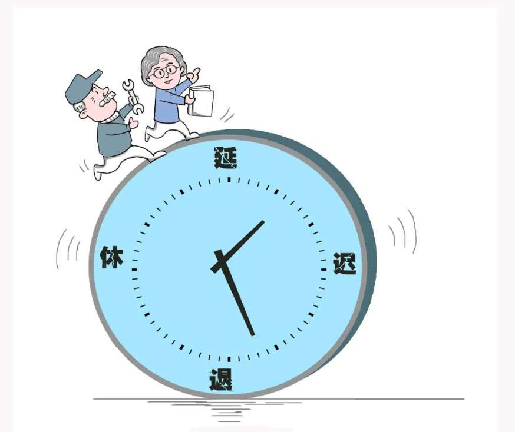

“十四五”规划《建议》提出，实施渐进式延迟法定退休年龄。由于延迟退休事关群众切身利益，一石激起千层浪，大家对延迟退休的影响议论纷纷。那么，中央为什么提出实施渐进式延迟法定退休年龄？实施这一方案有可能造成什么影响？如何稳妥推进延迟退休避免造成新的社会矛盾？
近几年，关于延迟退休的话题持续受到各界关注。早在2008年11月，人社部社会保障研究所负责人就称，相关部门正在酝酿条件成熟时延长退休年龄。2012年，由人社部、发改委等部门联合制定的《社会保障“十二五”规划纲要》发布，其中提出“研究弹性延迟领取养老金年龄的政策”。此后，关于国家将实施延迟法定退休年龄的说法一直未断。如今，相关提法更是从“研究制定”进入“计划实施”阶段。业内人士认为，与“十三五”相比，这次规划建议强调实施，就是要真正“动”起来，从顶层设计到付诸行动，提高法定退休年龄成为大势所趋。据了解，我国人均预期寿命已从新中国成立初期的40岁左右提高到了2019年的77.3岁，但新中国成立初期确定的男性60岁、女干部55岁、女职工50岁的法定退休年龄，近70年未有调整。

由新华社提供：延迟退休漫画
延迟退休是有效应对人口老龄化的现实需要。有专家表示，在“十四五”期间，有一个非常严峻的“窗口期”，1963年“婴儿潮”时出生的人口马上就要满60岁，这会导致我国养老保险中缴费人群迅速减少，领取人迅速增加，实施延迟法定退休年龄在“十四五”期间必须提上日程。还有专家表示，随着中国人口平均年龄的增长，过早退休也是人力资源的巨大浪费从国际横向比较，我国现行退休年龄也偏低。人社部资料显示，近年来，美、德、日等国都将法定退休年龄逐步提高到了65岁甚至更高。专家表示，实施延迟法定退休年龄，不仅可以避免人力资源浪费，而且可以增加养老金的收入来源，减轻养老金的支出压力，对于维护养老系统的正常运行非常有必要。
由新华社提供：老人在公园里打太极
最近，有关如何实施延迟法定退休年龄的讨论较多，热议的有两种方案：第一种是，女性先延长到60岁退休，之后男女同步延长到65岁；第二种是，男女一起延长，女性速度快一点，同步达到65岁。 延迟法定退休年龄到底对我们有哪些影响？大家普遍关心如下几个方面的问题。
一是第一批“面对者”担忧自己工作生活的不确定性。调查显示，许多70后对此最为敏感，因为他们是最有可能第一批面对延迟法定退休年龄的人。有接近退休年龄的女性劳动者表示：“已经计划好准备退休，突然又被告知要延迟。”一些网友也在各大平台留言：退休年龄工作容易出现脑溢血等“老人病”，就医和药品上能否给予补偿补助？上了岁数肯定不可能像年轻人一样高强度工作，能否匀出时间来锻炼？
二是对年轻人就业的影响。不少人认为，对于传统行业和事业单位来说，几乎是一个萝卜一个坑，老年人不退休、不离岗，那么新人想要转正、升职，肯定会有一定的难度。也有人认为，如今新产业、新业态、新模式层出不穷，新的就业岗位在不断创造，此外，还有一些新的职业只需要年轻人，所以，延迟法定退休年龄对年轻人的就业影响并没有那么可怕。
三是有可能影响到女性生育子女的意愿。延迟法定退休年龄本来是求解老龄化社会的“一副药”，但是有可能引致新生儿减少，从另一方面加剧老龄化问题。不少人表示，本来女性50岁退休之后，刚好可以替子女带小孩，减轻年轻人的压力。如果女同胞需要工作至60岁、65岁才能退休，再也没有时间和精力替子女分担压力，此后，年轻人恐怕更不愿意多生育孩子。
由新华社提供：冒雨行走的父子
延迟法定退休年龄政策，关系到全体公民利益，要小步慢走，稳妥推进，避免造成新的社会矛盾。
一是针对不同行业、工种实施差别化延迟法定退休年龄。有一些工种，比如说重体力劳动者，如煤炭工人，如果非要延迟到60岁以上退休，并不现实。另一方面也要考虑各个工种延迟法定退休年龄的意愿，比如说医生和教师等群体可能更倾向于延迟法定退休年龄。
二是考虑实行有弹性的退休制度。即设定一个退休年龄区间段，当员工到达退休年龄的最低限时，可以根据自身情况在这个年龄之后选择合适的时间点办理退休手续，到达退休年龄的最高限时，则必须办理退休手续。实行有弹性的退休制度，一方面可以给予职工更大的自主权，体现人文关怀；另一方面使一些有精力、有能力的人员可以继续留在工作岗位上发挥余热，避免人力资源浪费。
三是领取养老金可“早减晚增”。不少专家表示，不一定非要强制某一年龄才能退休，但在养老金的领取上可以“早减晚增”，也就是早退休的人领取比例低一些，晚退休可以增加一定比例的养老金领取，这是对于坚持工作的人的一种激励。